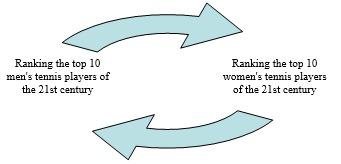
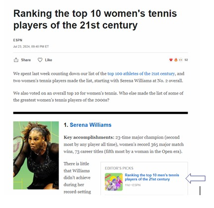
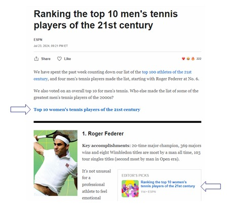
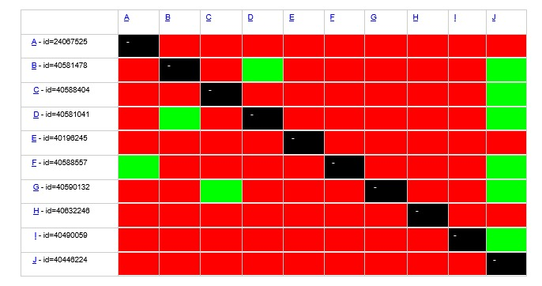
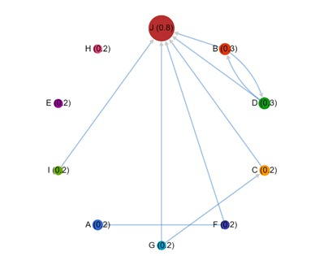
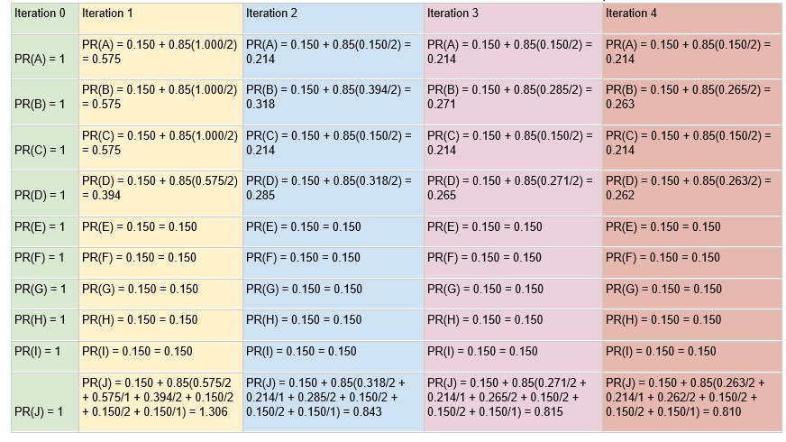

Total execution time: 7 minutes and 40 seconds
Average time per query: 2 minutes and 33 seconds
Factors affecting execution time: We didn't focus on complexity and runtime optimization. We included extra waiting times for page loads and implemented several loops that could be improved.
Potential improvements: Using different technologies, as Puppeteer with JS isn't ideal for runtime optimization. Implementing parallel page openings could significantly reduce execution time.
The returned pages contain both hubs and authorities. For example, the page "Ranking the top 10 women's tennis players of the 21st century" links to "Ranking the top 10 men's tennis players of the 21st century" and vice versa, showing bi-directional connectivity between these pages.
  PageRank was calculated for 10 pages returned from the query "top 10 tennis men ranking". The calculation was performed manually over 4 iterations.
  Final PageRank results:
User 1 selected pages B, D, and J as relevant.
User 2 selected only page B as relevant.
Improved query suggestion: "best 10 men's tennis ranking" instead of "top 10 tennis men ranking"
This page serves as the HTML representation of all sections (א-ו) of the project analysis.
Visit the IR-HW3 Project